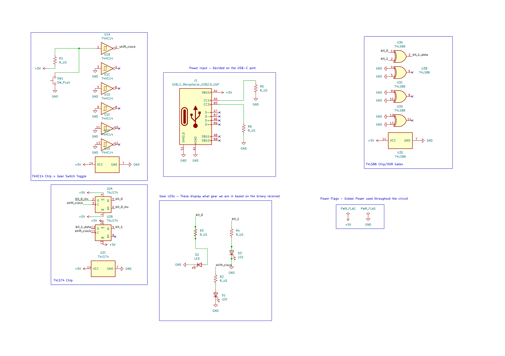
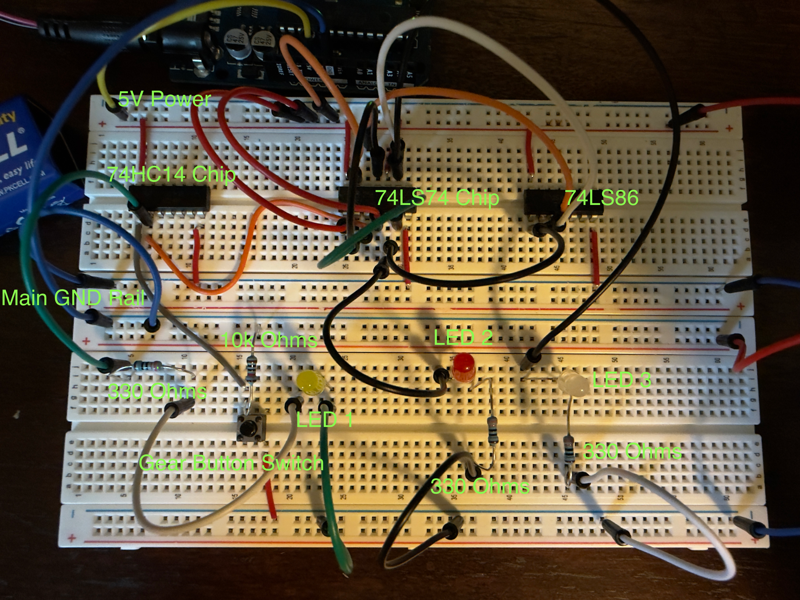

Digital Logic Control Unit
A 2-bit synchronous state machine for an EV gearbox using XOR-based discrete logic.
Project Overview
- Role: solo project
- Key hardware: 74LS74 (dual D flip-flops), 74LS86 (quad XOR gates), 74HC14 (Schmitt-trigger inverters)
- Tools used: KiCAD, breadboard prototyping, DMM measurements, Arduino for power/GND supplies during testing
The Challenge
I wanted to learn how logic gates and ICs can carry binary information through a circuit, and how that learning connects to PCB design and real-world implementation. That motivation grew when I saw Mazda release a fully EV car with electronic gear shifts, and I wanted to replicate the concept using only discrete IC logic (no microcontroller programming). The goal was to design a hardware-level "gearbox" controller for an electric vehicle testbed: a 2-bit synchronous state machine that manages four gear states (00 to 11) from manual shift inputs.
This iteration focuses on Shift Up: each valid input advances the state through 00 -> 01 -> 10 -> 11 -> 00 (cyclic four-gear behavior).
Requirements
- Stable synchronous behavior: state updates must behave like a synchronous state machine (stored in 74LS74 flip-flops).
- Clean input clocking: mechanical shift inputs must be debounced and squared using 74HC14 Schmitt-trigger inverters.
- Discrete gearbox logic: transition behavior must be defined by XOR-based discrete logic (74LS86), not by software.
Design & Logic
Logic Theory
I derived the excitation/next-state mapping for a 2-bit gearbox state machine. The XOR-based combinational network determines whether the state should toggle on the next synchronous update, while the 74LS74 flip-flops hold the gear state.
Shift Up state flow (cyclic): 00 -> 01 -> 10 -> 11 -> 00.
Visual feedback uses three LEDs: LED1 indicates the manual shift button/actuation state, while LED2 and LED3 represent the current 2-bit gear state (00 to 11).
PCB SPICE Schematic - KiCAD

Implementation
Prototype Phase

Component Selection
- 74LS74 (dual D flip-flops): stores the 2-bit gear state synchronously.
- 74LS86 (quad XOR gates): implements XOR-based transition/excitation logic.
- 74HC14 (Schmitt-trigger inverters): squares noisy mechanical shift inputs so clock pins see clean transitions.
Signal Conditioning
The 74HC14 Schmitt trigger converts bouncy switch edges into fast, reliable digital transitions, which is critical for preventing erratic state changes on synchronous flip-flops.
Debugging & Iteration
- Problem: mechanical button bounce created false on/off commands.
- Cause: the 74LS74 flip-flops treated each micro-bounce as a clock, making the gear state jump unpredictably.
- Fix: routed the shift input through the 74HC14 Schmitt-trigger inverter to use hysteresis and clean the signal before it reached the flip-flops.
- Outcome: one physical press now produces one reliable clock command, so transitions are stable and repeatable.
Wiring discipline also matters for synchronous logic: keeping XOR-to-flip-flop connections organized helps preserve clean logic levels during clocked updates on the breadboard.
Reflection
- Mechanical inputs: switch bounce can cause flicker or erratic state toggling.
- Lesson: synchronous logic only works reliably when input conditioning creates clean transitions and wiring preserves stable logic levels.
- PCB workflow: I transitioned the prototype wiring into PCB layout, then worked through manufacturing and test iterations to validate the board-level implementation.
- Next iteration: add Shift Down control and the missing down-transition mapping to complete full up/down gearbox behavior.
Final Result & Validation
- Reliably cycles through 00 → 01 → 10 → 11 → 00 on Shift Up.
- Synchronous logic only works when input conditioning and wiring preserve clean transitions.